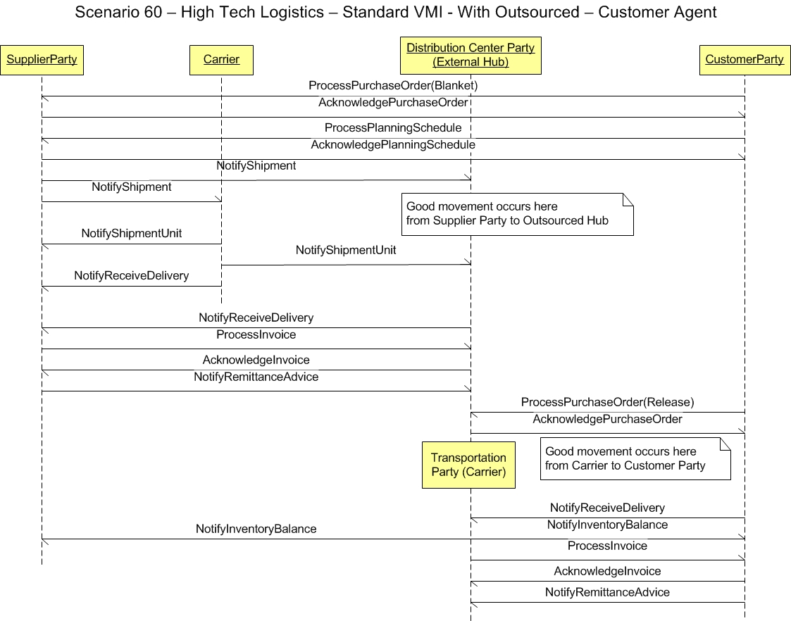

Scenario
60 - High Tech
Logistics - Standard VMI With Outsourced - Customer Agent
60.0
Overview
Scenario
#60 describes the integration for supplier party applications to
integrate with transportation party (Carrier), distribution center
party (External Hub) and customer party applications to accomplish a
process typically referred to as outsourced vendor managed inventory (VMI) -
a process somewhat similar to a blanket purchase order.
The
purpose of this scenario is to enable the visualization of the
participants in the process and the dialogs between them for this
specific integration. This scenario is not meant to be the only model
for integrating general ledger applications to a budget
applications. This is simply one model that may be used to guide one's
own integration efforts.
60.1
Scenario
The scenario
below contains the participants involved in the
interaction, the dialog flows or conversation between them, certain
assumptions about the sequence of events, and assumptions about the
technical approach, for example, publish and subscribe.
This
is a model to be used as a design recommendation, not a required
approach.

60.2
Assumptions
This
scenario assumes a loosely coupled, asynchronous approach with
transaction management required but not
explicitly defined.
It also presumes that this scenario can be applied as a B2B interaction
between enterprises, as an internal A2A exchange within an enterprise
or as an B2M exchange from a business to a mobile device following the
same canonical business messaging model.
60.3
Participant Definitions
This
scenario contains four major participants or roles:
- Supplier
party
- Transportation
party (Carrier)
- Distribution
center party (External Hub)
- Customer
party
The
definitions and
details of these participants are
left to the designer but are assumed to contain the functionality as
defined by what is commonly sold in the commercial market place today.
This
definition is broadly accepted by the scenario designers and is a
direct result of the decision not to
define how the
processing takes place within any individual application.
Each
application must be
able perform the services defined by the message BOD (business object
document), but the internals of the application are not
required or
desired to be exposed at this level of standardized abstraction.
The
most important factors in defining these participants is to ensure
that an integration designer can communicate the requirements
precisely
enough to detail the interfaces needed and their interrelationships.
60.4
Business Workflow (Sequence)
This scenario
contains the following events in the workflow sequence.
- Initiate a request to process a purchase order to the supplier from the customer
- Supplier party indicates the acceptance or rejection
of the purchase order from the customer
- Initiate a request to process an planning schedule and indicate the acceptance or
rejection of the schedule
- Transportation party (Carrier) pickup of the order occurs
- Communicate that a shipment is leaving from the supplier to the customer
- Notify that the shipment is leaving from the supplier informing the transportation party (Carrier)
- Update the shipment information from
the transportation party (Carrier) to both the distribution center
(External Hub) and the supplier
- Communicate the delivery from the transportation party (Carrier) to the supplier, distribution and supplier
- Request to process an invoice to the distribution center (External Hub) from the supplier
- Indicate acceptance or rejection of the invoice
- Communicate the that the supplier has
initiated the payment and that the distribution center
will receive same
- Request
to process a purchase order (Release) to the distribution center
from the customer
- Indicate acceptance or rejection
of the PO (Release) from the distribution center to the customer
- Goods movement occurs to the customer
- Customer indicates delivery
- Notification of the inventory adjustments from customer to supplier
- Request to process an invoice to the
Customer from the distribution center
- Indicate acceptance or rejection of the invoice from the customer back to the distribution center
- Communicate the that the customer has initiated the payment to the distribution center
60.5
Exception Handling
Exception
handling is highly localized as the result of an implementation's
infrastructure, management and business rules. As such, this section of
the Scenario documentation is planned to be used as a
guide to help understand the additional intent of these Scenarios. If no exceptions are noted here, then it can be assumed that
the Scenario designers agreed that the Scenario is straight forward and
has no additional needs:
- Note
that the Confirm BOD is not shown in the scenario and that it is the
most obvious method for
providing an application level exception and feedback mechanism between
business
software components. Full Confirm BOD use is described in other OAGIS
documentation in detail, but it should be noted that the specific use
of the Confirm
BOD may vary significantly from scenario to scenario and from
integration to integration.
- The
Confirm BOD is typically intended to be used by the original receiving
application to communicate to the sending application that the
information
it sent in the message BOD (business object document) was received and understood and can be
processed.
- If the
information was not
received or nor understood, or contained errors of any type, it is
accepted practice for the OAGIS users to presume that the data was
not acted on and in the absence of a Confirm BOD within a partnership previously agreed to
time limit to resend the original message again.
- As errors and assumptions are the bane of any implementation,
it is strongly recommended that the Confirm BOD be used to prevent any
potential problem although it is not a requirement by OAGIS use.
Copyright
OAGi 2016 - All Rights Reserved --
OAGIS
release 10.3 - Document Number: 20160901-60 |